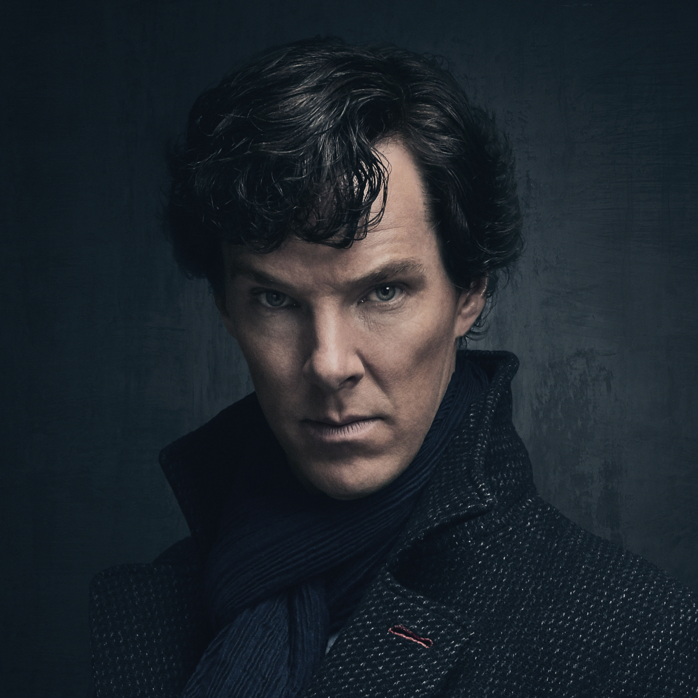

Sherlock

Sherlock is a TV series about Sherlock Holmes, a highly intelligent man who works as a "consulting detective" for the police with his assistant, flatmate and friend Dr. John Watson. They work together to solve cases that the Police aren't able to. Sherlock works out the puzzles and John blogs about it which over time gains them a following and they become somewhat famous.
The series is based on the books written by Sir Arthur Conan Doyle although it is a modern reenactment.
Main Cast:
| Character | Actor/Actress |
| Sherlock Holmes | Benedic Cumberbatch |
| John Watson | Martin Freeman |
| Jim Moriarty | Andrew Scott |
| D.I Greg Lestrade | Rupert Graves |
| Mycroft Holmes | Mark Gatiss |
| Mrs. Hudson | Una Stubbs |
| Molly Hooper | Louise Brealey |
I like this show because:
- I like the modern take on the books and all the little references back to them.
- I love the actor Benedict Cumberbatch and I think he was great at being Sherlock.
- It's funny yet has its darker moments.